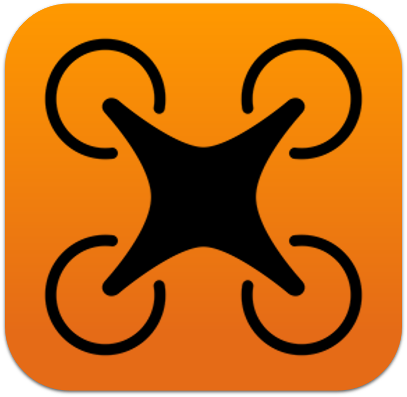

Somos un grupo de amigos, estudiantes de Ingeniería en Sistemas de Información y de Ingeniería Electrónica, que nos juntamos para complementar nuestras habilidades y conocimientos en el desarrollo de este proyecto.
Crear una aplicación que permita a operadores de pequeños drones saber más sobre específicos parámetros del clima, terreno local y zonas de “no-vuelo” dentro de un radio de 5 millas de su ubicación GPS.
Nos pareció el proyecto con mayor impacto en nuestra región actualmente y con una mayor posibilidad de implementarlo a pequeña escala y por nuestros medios.
Con este proyecto sentimos que podíamos volcar y aplicar mejor nuestros conocimientos debido a nuestros estudios y a las tecnologías que tenemos al alcance.
Muchos problemas se han generado a causa del mal uso de drones, desde un simple choque con un árbol hasta forzar el aterrizaje de un avión. ¡Nos encantaría dar solución a esos problemas!
Una aplicación destinada a los usuarios de pequeños y medianos drones para controlar remotamente la ubicación del dispositivo y recibir alertas instantáneas frente a posibles peligros de colisión.
Permite ubicarte en tiempo y espacio en todo el mundo, con un margen de error mínimo.
Informa las alertas meteorológicas en tu zona de vuelo para evitar accidentes.
Recopilamos las áreas restringidas y te alertamos si se encuentra próximo a ellas.
Gracias a sus sensores de proximidad 360º, vas a lograr detectar cualquier obstáculo en tu camino.
En los últimos tiempos han sucedido muchos accidentes aéreos, algunos de gran magnitud como vuelos suspendidos y aterrizajes forzados.
Poder prevenir estos inconvenientes, así como la pérdida o estropeo
de los equipos, es muy importante, por lo cual GeoDrone es la opción ideal!
Seguimos avanzando en el proyecto enfocándonos en reemplazar el celular por un dispositivo, el cual contenga un GPS y envíe datos al propietario directamente, minimizando así el peso y espacio, aumentando la velocidad de transferencia y dando la posibilidad de funcionar sin conexión a internet.
2016
Nasa Space Apps Rosario